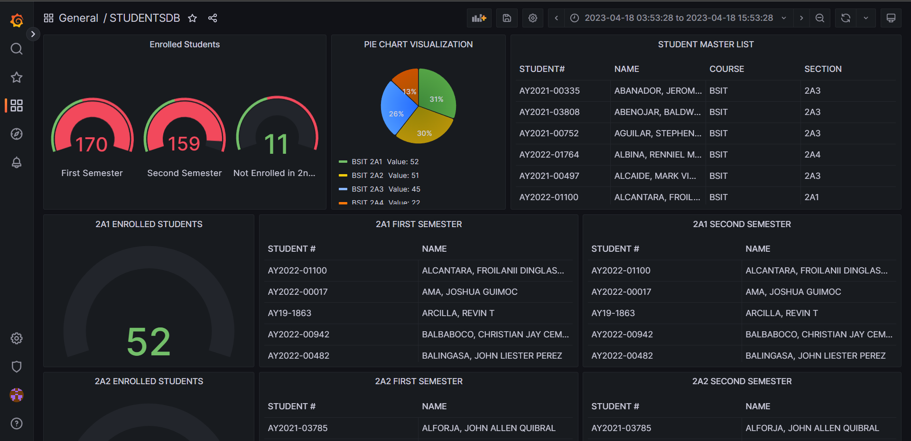
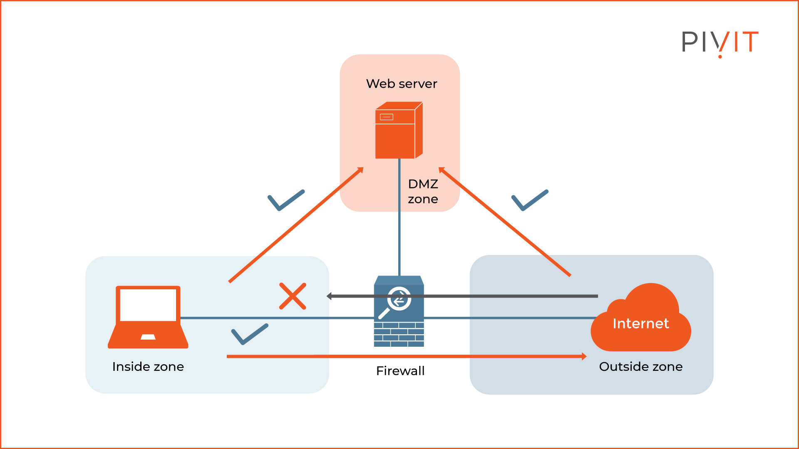
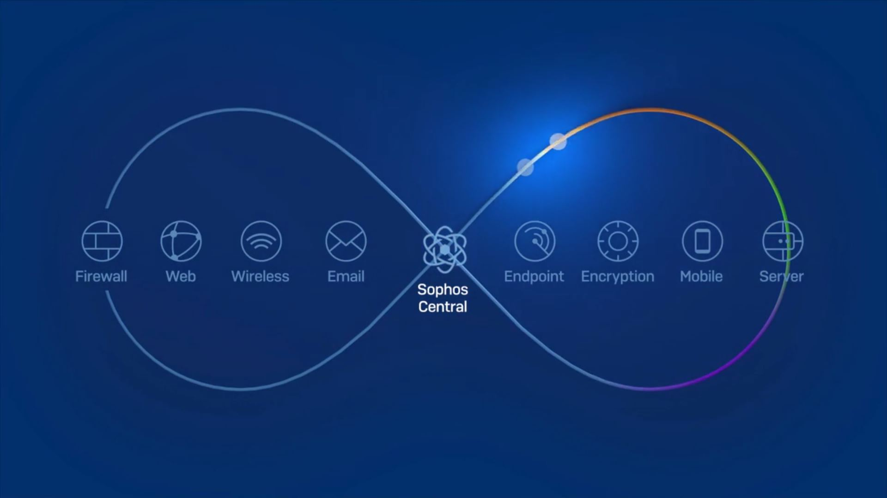

About Me
Hi, my name is Froilan Alcantara and I am an aspiring web developer.
My Projects
Grafana Dashboard with PostgreSQL
Blog
What is Firewall?
A firewall is a network security device that monitors incoming and outgoing network traffic and permits or blocks data packets based on a set of security rules. Its purpose is to establish a barrier between your internal network and incoming traffic from external sources (such as the internet) in order to block malicious traffic like viruses and hackers.
How does a firewall work?
Firewalls carefully analyze incoming traffic based on pre-established rules and filter traffic coming from unsecured or suspicious sources to prevent attacks. Firewalls guard traffic at a computer’s entry point, called ports, which is where information is exchanged with external devices. For example, “Source address 172.18.1.1 is allowed to reach destination 172.18.2.1 over port 22.
Think of IP addresses as houses, and port numbers as rooms within the house. Only trusted people (source addresses) are allowed to enter the house (destination address) at all—then it’s further filtered so that people within the house are only allowed to access certain rooms (destination ports), depending on if they're the owner, a child, or a guest. The owner is allowed to any room (any port), while children and guests are allowed into a certain set of rooms (specific ports).
How to configure a firewall?
STEP 1: Secure your firewall
If an attacker is able to gain administrative access to your firewall it is “game over” for your network security. Therefore, securing your firewall is the first and most important step of this process. Never put a firewall into production that is not properly secured by at least the following configuration actions
STEP 2: Architect your firewall zones and IP addresses
In order to protect the valuable assets on your network, you should first identify what the assets are (for example, payment card data or patient data). Then plan out your network structure so that these assets can be grouped together and placed into networks (or zones) based on similar sensitivity level and function.
Step 3: Configure access control lists
Now that you have established your network zones and assigned them to interfaces, you should determine exactly which traffic needs to be able to flow into and out of each zone. This traffic will be permitted using firewall rules called access control lists (ACLs), which are applied to each interface or subinterface on the firewall. Make your ACLs specific to the exact source and/or destination IP addresses and port numbers whenever possible. At the end of every access control list, make sure there is a “deny all” rule to filter out all unapproved traffic. Apply both inbound and outbound ACLs to each interface and subinterface on your firewall so that only approved traffic is allowed into and out of each zone.
Step 4: Configure your other firewall services and logging
If your firewall is also capable of acting as a dynamic host configuration protocol (DHCP) server, network time protocol (NTP) server, intrusion prevention system (IPS), etc., then go ahead and configure the services you wish to use. Disable all the extra services that you don’t intend to use.
Step 5: Test your firewall configuration
In a test environment, verify that your firewall works as intended.
Don’t forget to verify that your firewall is blocking traffic that
should be blocked according to your ACL configurations. Testing your
firewall should include both vulnerability scanning and penetration
testing.
Once you have finished testing your firewall, your firewall should be
ready for production. Always remember to keep a backup of your
firewall configuration saved in a secure place so that all of your
hard work is not lost in the event of a hardware failure.
What is Sophos?
Sophos is a cybersecurity solution that offers detection and response, firewall, cloud, and managed service solutions for network security and unified threat management. Its software provides critical malware, phishing website, and ransomware prevention. While security specialists are familiar with the brand Sophos antivirus, the program is only excellent for essential malware detection. Sophos protects your device from malware, hackers, and other dangerous invaders.
How does sophos work?
Sophos Anti-Virus detects and cleans up viruses, Trojans, worms, and spyware, as well as adware and other potentially unwanted applications. Our HIPS (Host Intrusion Prevention System) technology can also protect your computer from suspicious files and rootkits. In addition, Malicious Traffic Detector can detect communications between your computer and command and control servers involved in a botnet or other malware attack.
About Sophos Endpoint Security and Control
Sophos Web Protection:
Sophos Web Protection provides enhanced protection against web threats by preventing access to locations that are known to host malware. It blocks endpoints access to such sites by performing a real-time lookup against Sophos online database of malicious websites. It also scans downloaded data and files and checks file reputation.
Sophos Client Firewall:
Sophos Client Firewall prevents worms, Trojans, and spyware from stealing and distributing sensitive information, and also prevents intrusion from hackers.
Sophos Application Control:
Sophos Application Control blocks unauthorized applications such as Voice over IP, instant messaging, file sharing, and game software.
Sophos Data Control:
Sophos Data Control prevents the accidental leakage of personally-identifiable information from managed computers.
Sophos Device Control:
Sophos Device Control blocks unauthorized external storage devices and wireless connection technologies.